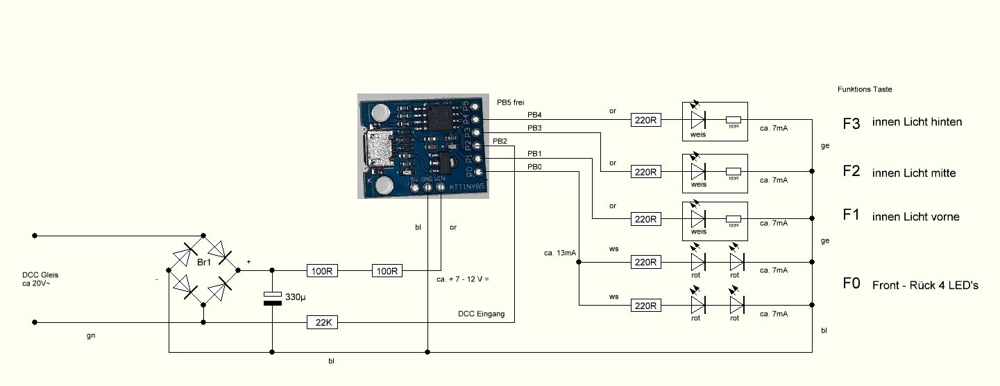
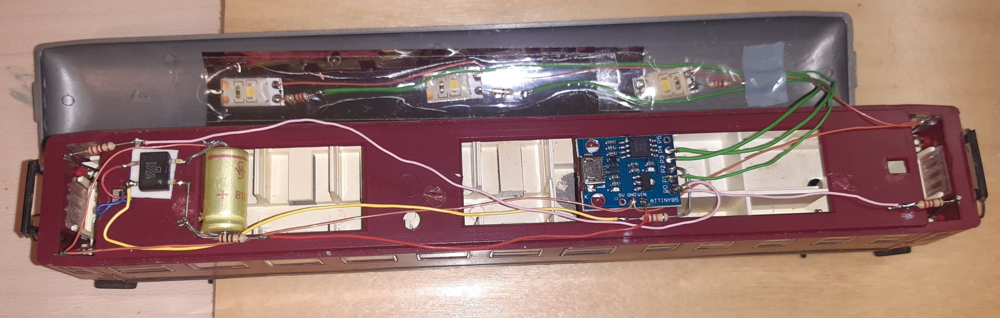

DCC Funktionsdecoder mit ATtiny85
mit den Digispark ATtiny85 steuere ich die Beleuchtungen von Wagons
für die Wagenbeleuchtung verwende ich einen Digispark ATtiny85 als DCC Decoder, welcher mit einer Lok Adresse und den Funktionstasten F0, F1 - F3 (-F12) die LED's ansteuert, es werden nur sehr wenige Bauteile dafür benötigt.
Voraussetzung alt:
Erweiterung der Arduino IDE Einstellungen um Zusätzliche Boardverwalter-URL: http://digistump.com/package_digistump_index.json (alt, offline, Stand: 03.2024)
Werkzeug Board Auswahl: Digispark (Default - 16.5mhz)
Voraussetzung:
Erweiterung der Arduino IDE Einstellungen um Zusätzliche Boardverwalter-URL: https://drazzy.com/package_drazzy.com_index.json
Board-Verwaltung: suche nach ATTiny85 und installiere: ATTinycore von Spence Konde V1.5.2
Bibliotheksverwaltung: suche nach NMRA und installiere: NmraDcc von Alex Shepherd, Wolfgang Kuffer, ... V2.0.17
Board Auswahl: "ATTinyCore - ATtiny85 (Micronucleus / DigiSpark)"
Hinweis: ich hatte folgenden Fehlermeldung in Windows 10, beim hochladen zum ATtiny85: "Fehlgeschlagenes Hochladen: Hochladefehler: exit status 0xc0000135" (libusb0.dll nicht gefunden)
Abhilfe war C:\Users\username\AppData\Local\Arduino15\packages\ATTinyCore\tools\micronucleus\2.5-azd1b\Drivers\DPinst64.exe als Administrator ausführen.


der Standard Bootloader t85_default.hex benötigt ca. 6 Sec. Bootloaderzeit.
darum Update der ATiny85 Bootloader Firmware über USB, damit wird die Bootloaderzeit auf 300 mSec minimiert.
Download von Source code (zip) den Inhalt der Datei: micronucleus-firmware-2.6.0.zip entpacken. (externer Link)
In das Verzeichnis nach ...\micronucleus-firmware-2.6.0\utils\ wechseln und 1_Upgrade-t85_entry_on_powerOn_activePullup_fastExit_noLED.cmd ausführen,
nun wird man aufgefordert den ATtiny85 an einen USB-Anschluss anzustecken, (auch im eingelöteten Zustand),
dann wird die Bootloader Firmware upgrade-t85_entry_on_powerOn_activePullup_fastExit_noLED.hex auf Version 2.6 aktualisiert.
anschließend mein DCC Funktionsdecoder Sketch für den ATtiny85
DCC_ATtiny85.zip (aktualisiert 04.2024)
DCC-Adresse "This_Decoder_Address" anpassen und mit der Arduino IDE, auch im eingelöteten Zustand programmieren.
getestet mit diesen Digispark ATtiny85 Varianten:


Hier weitere Information zu Digispark ATtiny85 (externe Links)
Wolles-Elektronikkiste.de ATtiny mit Arduino Code programmieren
Wolles-Elektronikkiste.de Digispark – die bequeme ATtiny85 Alternative
Robokalle ATtiny85 DCC-Lichtsignaldecoder für LED-Lichtsignale
"https://github.com/ArminJo/DigistumpArduino Bootloader Infos
"https://github.com/ArminJo/micronucleus-firmware Micronucleus USB Bootloader for ATtinies / Digisparks
Bootloader releases aktuelle micronucleus-firmware Bootloader Versionen
Bootloader Methode 1 Video von Anfang an bis 4:20 Minuten